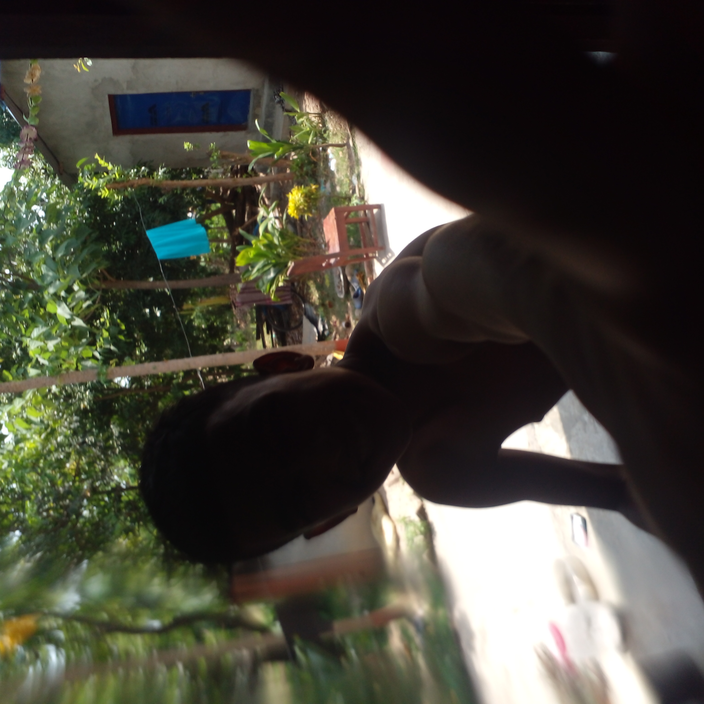

🚀 A New Chapter
This is the beginning of something magical. Stories that echo from the heart of Mahendranagar to the stars above — bold, beautiful, and brave.

🌈 Vibes of the Future
Welcome to a space where identity is freedom, and freedom is colorful. Every soul deserves to shine — just like the galaxies we gaze upon.